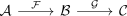
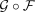

composition of left exact functors as left exact functor
1. Proposition
Let  be abelian categories and
be abelian categories and

be left exact functors. Then so is the functor composition

Let be abelian categories and

be left exact functors. Then so is the functor composition
